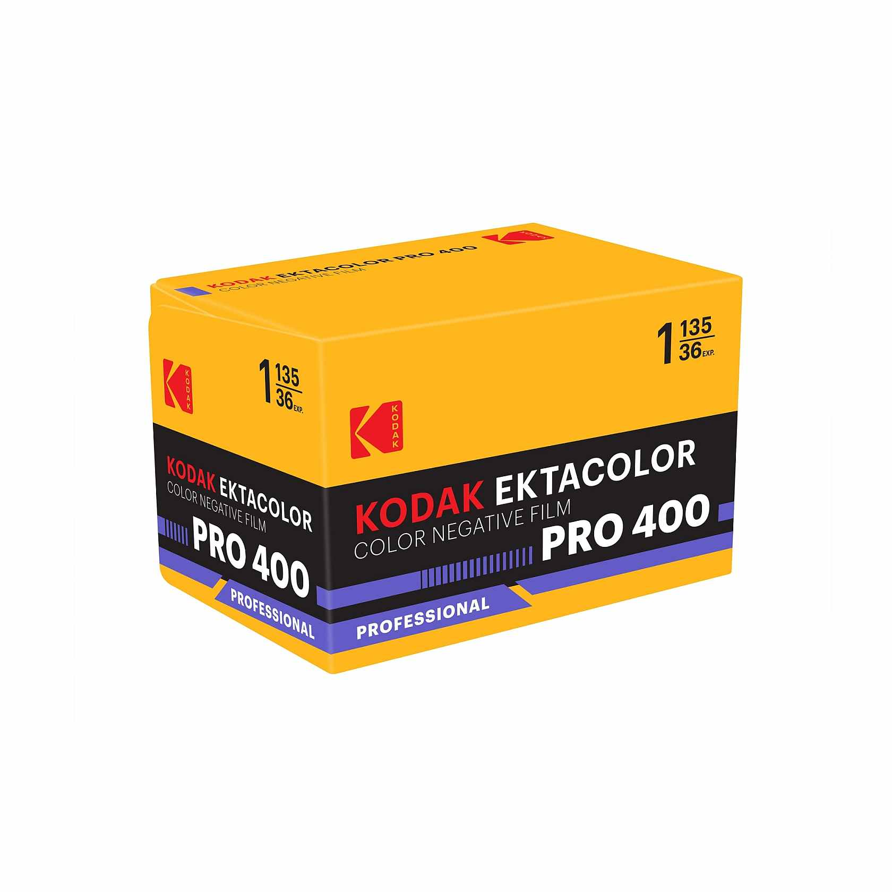
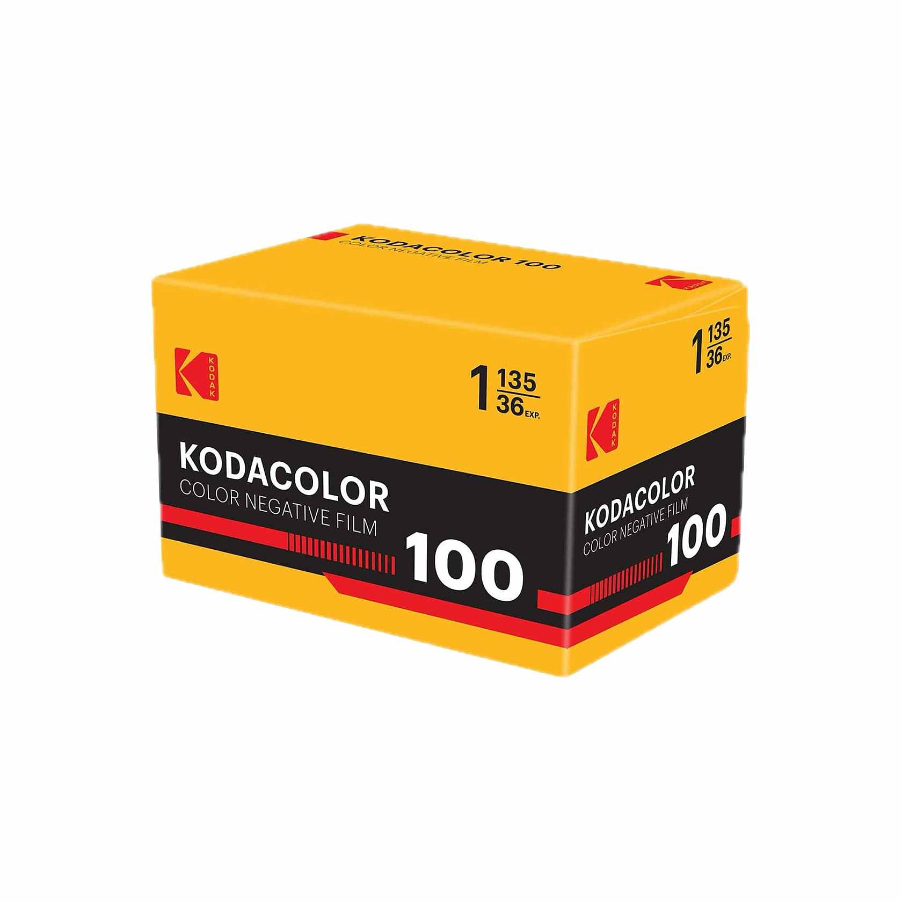
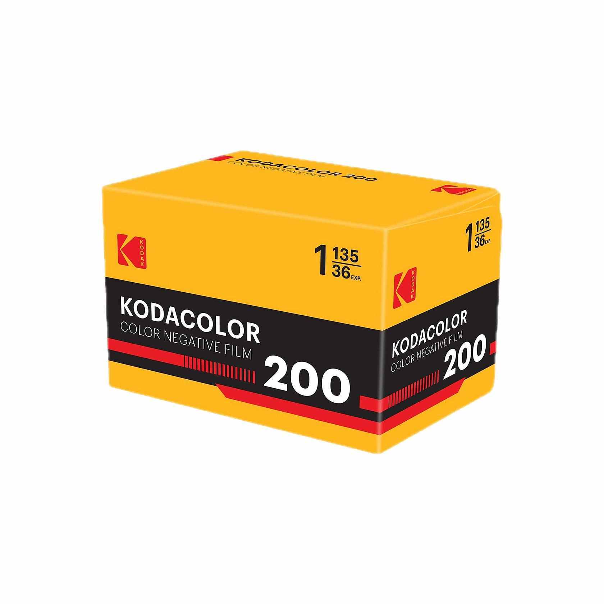
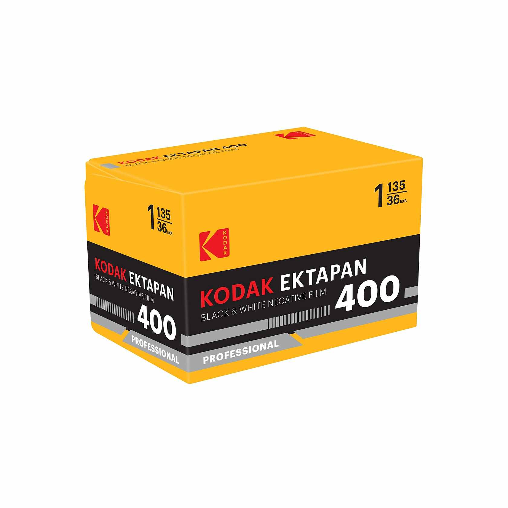
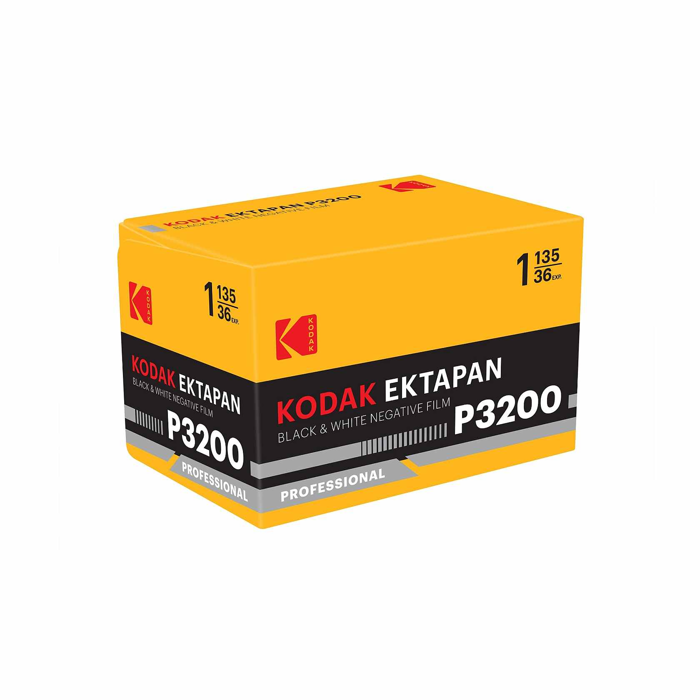
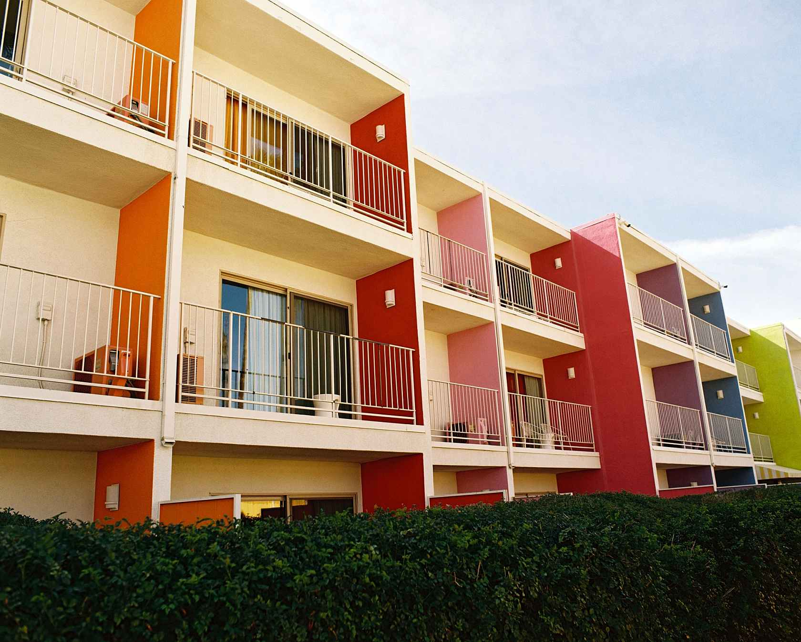

"필름이 사라지던 시대를 지나, 이름이 바뀌는 시대다. 그런데 이름만 바뀐 게 아니다."
지난해 9월, Eastman Kodak 이 Kodacolor 100 과 200 이라는 새 필름을 풀었을 때부터 분위기가 묘했다. 이름은 옛것이지만, 거의 십 년 만에 코닥 본사가 직접 유통하는 35mm 컬러 네거티브 신제품이었다. 가격은 한 롤에 약 9달러. 작은 사건처럼 보였지만 사실 시작이었다.
올해 3월 24일, 코닥은 본격적으로 보따리를 풀었다. 컬러 네거티브 라인 Ektacolor Pro 160 / 400 / 800 세 종, 흑백 라인 Ektapan 100 / 400 / P3200 세 종. 새 이름의 필름이 한꺼번에 여섯 종이 등장한 것이다. 5월에는 대형 포맷 시트필름과 100ft bulk 롤까지 라인업을 더 늘렸다.
문제는 이 이름들이 새것이 아니라는 점이다. Ektacolor 는 1947년부터 코닥의 프로용 컬러 네거티브 브랜드였고, Ektapan 은 60년대 흑백 필름 이름이다. 그러니까 코닥은 60년대 클래식 네이밍을 꺼내 와서, 지금 우리가 잘 아는 필름들에 새로 붙인 셈이다.
라인업 정리, 사실상 Portra 와 T-Max 의 리브랜드
가장 먼저 짚어둘 것. Ektacolor Pro 160 / 400 / 800 은 Portra 160 / 400 / 800 과 같은 에멀션이다. Ektapan 100 / 400 / P3200 도 T-Max 100 / 400 / P3200 과 같은 에멀션이다. 필름 자체는 똑같고, 박스만 다르다. 한 롤에 Ektacolor Pro 는 약 $16.99, Ektapan 은 약 $10.99. 포맷은 35mm 와 120 양쪽 다 나오는데, P3200 만 35mm 단독이다.

작년 9월에 먼저 나온 Kodacolor 100 / 200 은 리브랜드가 아니라 새 제품 라인이다. ISO 100 은 저감도·고채도·미세입자 컨슈머 필름, ISO 200 은 약간의 저조도 보완용. Gold 200 자리에 새 옵션이 하나 더 생긴 모양새다.


여기서 한 가지 꼭 정리해야 할 게 있다. Kodachrome 이 돌아온 게 아니다. 너무 비슷한 이름이라 자주 헷갈리는데, Kodachrome 은 K-14 슬라이드 필름으로 2009년 단종됐고 부활 안 했다. 코닥 본사도 "현실적으로 부활 불가능"이라는 입장을 여러 번 밝혔다. 필요한 화학 원료와 현상 인프라가 사라졌기 때문이다. 이번에 나온 건 C-41 컬러 네거티브 Kodacolor 다. 둘은 전혀 다른 필름이다.


왜 이름을 바꿨나, 2012년 파산의 후유증
이게 이번 변화의 핵심이다. 박스만 바꾸려고 한 일이 아니다.
2012년 Eastman Kodak 이 파산했을 때, 회사는 둘로 쪼개졌다. Eastman Kodak Company 는 로체스터 공장에서 필름을 만드는 역할만 남았고, Kodak Alaris 라는 별도의 법인이 그 필름을 받아 Portra · T-Max · Gold · Ektar 같은 친숙한 이름으로 브랜딩하고 전 세계로 유통하는 역할을 맡았다. 그 후 14년 동안 우리가 사 온 필름들은 전부 이 구조로 흘러왔다. 공장은 Eastman, 박스와 영업은 Alaris.
그런데 지난해부터 Eastman Kodak 이 그걸 다시 가져오기 시작했다. Kodacolor 100 / 200 을 직접 유통한 게 첫걸음이고, 올해 3월의 Ektacolor / Ektapan 출시로 본격화됐다. 한 줄로 정리하면, Eastman Kodak 이 자기 필름을 자기가 다시 팔겠다는 선언이다.
다만 걸림돌이 있다. Portra 와 T-Max 같은 브랜드 이름의 상표권은 Kodak Alaris 가 가지고 있다. Eastman Kodak 이 같은 필름을 자기 이름으로 팔려면 그 이름들을 못 쓴다. 그래서 옛 클래식 네이밍을 꺼내 들었다. Ektacolor 와 Ektapan 이라는 카드는 코닥 본사가 권리를 보유한, 그러면서도 사진가들에게 어렴풋이 친숙한 이름이다.
5월 라인업 확장과 함께, 코닥 알라리스가 그간 다뤄 온 코닥 프로페셔널 필름 전체가 Eastman Kodak 산하로 다시 들어오고 있다. 14년의 분리 구조가 끝나가는 것이다.

이게 사진가들에게 의미하는 것
당장 우리가 셔터를 누를 때 바뀌는 건 없다. 같은 공장에서 같은 에멀션을 만든다. 색감이 달라지지도, 입자가 변하지도 않는다. 다만 이름 헷갈림은 한동안 피할 수 없다. 매장에서 Portra 를 찾는데 Ektacolor Pro 로 나오는 일이 생긴다. 신규 입문자들은 같은 필름이 두 이름으로 떠도는 과도기를 만나게 된다.
조금 더 멀리 보면, 이 변화가 좋은 방향일 수 있다는 의견이 우세하다. 유통 단계를 줄이면 가격 경쟁력이 생기고, 본사가 직접 챙기면 단종 위험도 줄어든다. 지난 십수 년 필름 가격이 계속 올라가는 와중에 Kodacolor 100 이 9달러대로 진입한 것은 그래서 상징적이다.
물론 미지의 부분도 있다. 국내 정식 출시 시점과 가격, 기존 Portra 재고가 빠지는 속도, Kodak Alaris 의 향후 행보. 모두 아직 그림이 그려지지 않았다. 한국 코닥 측의 공식 안내가 나오기 전까지는 병행 수입과 기존 유통이 한동안 섞여 돌아갈 가능성이 높다.
이름이 바뀐다고 필름이 바뀌는 건 아니다. 다만 누가 그 필름을 팔고 있는지, 그건 분명히 바뀌었다.
정리
- Kodachrome 아니라 Kodacolor. Kodachrome 은 그대로 단종.
- 새 신제품은 Kodacolor 100 / 200 하나뿐. 나머지는 다 리브랜드.
- Ektacolor Pro = Portra, Ektapan = T-Max. 필름은 같다.
- 진짜 사건은 박스 디자인이 아니라, Eastman Kodak 이 14년 만에 자기 필름을 자기 손으로 팔게 된 것.
- 사진가 입장에선 가격·접근성에 긍정 신호일 가능성이 크다.
좋은 필름이 더 안정적으로 더 오래 시장에 남아 있어 줬으면 좋겠다. 우리가 사는 건 결국 그 한 롤이니까.
국내 정식 출시 시점·가격, 코닥 코리아 측 공식 입장은 별도 확인 필요. 본 기사의 박스·샘플 이미지는 모두 코닥 공식 자료.